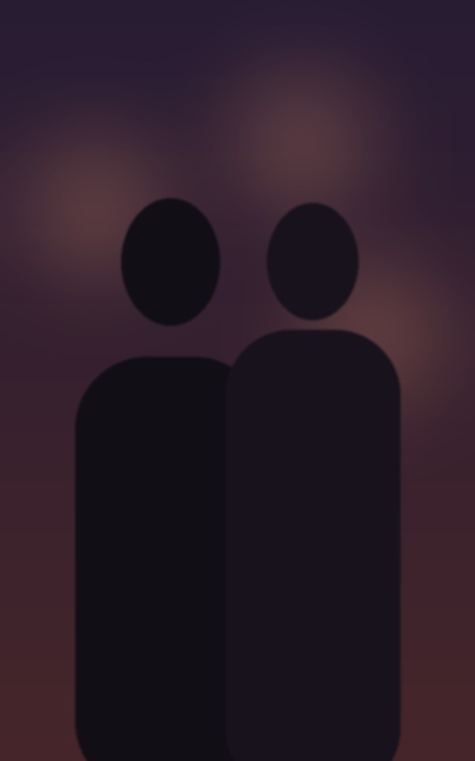
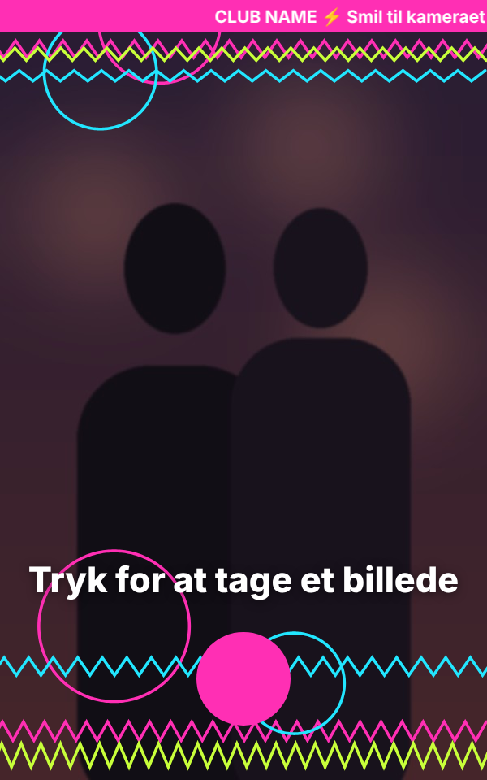

Alt om Halo-boksen samlet ét sted
Byggepakken indeholder alle dele i 3D, så I kan klikke på hver del og se mål, materiale og hvordan den sidder fast. Dertil kommer en samlevejledning trin for trin, målsatte tegninger, el-diagram, lys, printopsætning til H2C, temaer, indkøbsliste og kontrolresultater. Alt bygger på CAD-modellen i repoet.
HD-renderinger af standardboksen
Fotorealistiske renderinger (Blender Cycles) direkte fra CAD-modellen: mat sort ASA med pladetekstur, frostet PETG-ring og alle skruer og indsatser på deres rigtige plads. Klik for fuld størrelse.
3D-studie: alle dele i systemet
Klik på en del i modellen eller i listen for at se den. Brug sprængskitse og gennemsigtigt kabinet til at se ind i boksen. Fanen Samling viser byggeriet trin for trin, og fanen Opstilling skifter tilbehør, tema og lys.
Klik på en del
Den valgte del bliver fremhævet, og her står mål, materiale, fastgørelse og datablad.

Samlevejledning
Alle trin står her til at læse og printe. Med Vis i 3D afspiller 3D-studiet trinnet, og de nye dele glider på plads.
Dele og fastgørelse
Alle printede og købte dele med mål, materiale, fastgørelse og kilde. Kildemærkerne: [A] officielle data, [B] CAD-bibliotek, [C] målt på officielt foto, [M] skal måles på den rigtige del.
Printede dele
| Del | Mål (mm) | Materiale | Fastgørelse | Tegning |
|---|
Købte dele og datablade
| Del | Nøglemål | Sådan sidder den | Datablad / kilde |
|---|
Skruer og indsatser, samlet
| Hvad | Hvor | Antal | Hul / mål |
|---|
Gevindkort: alle huller, gevind og indsatser
Hentet direkte fra CAD-modellen (HW_LIST og HOLE_LIST i halo.scad). Positionerne er i delens egne koordinater: X er bredden (0 = midten), Y er dybden fra forsiden, og Z er højden fra bunden. Samme huller er markeret med ID'er (A1, B2 …) på deltegningerne.
| Hul / indsats | Ø × dybde | Antal | Positioner (X; Y; Z) mm | Sættes i |
|---|
Tekniske tegninger
36 tegninger genereret direkte fra CAD-modellen: samletegninger med positionsnumre og stykliste, snit gennem den samlede boks, skyggelagte detaljetegninger af hver fastgørelse, deltegninger med hultabel for alle printede dele og outline-tegninger af de købte komponenter. Blå er mål, rød er noter, og huller er markeret med ID'er. Klik for fuld størrelse.
Elektronik og ledningsplan
Boksen kører på 12 V fra én Mean Well-forsyning. To Pololu-moduler laver 5 V: ét til Pi og skærm og ét til LED. Fotolyset er 12 V COB, som Pi'en dæmper via en MOSFET. Fotomodulets Instax-printer får billederne over Bluetooth og holdes opladet af et USB-kabel fra Pi'en gennem kabelhullet Ø20.
| Pi 5 pin | Funktion | Til |
|---|---|---|
| Pin 2 / 4 (5 V) | Strøm til skærmen | Touch Display 2, medfølgende 5 V-kabel |
| Pin 6 / 9 (GND) | Fælles stel | Skærm, 74AHCT125, MOSFET |
| Pin 19 · GPIO10 | SPI0 MOSI → LED-data | 74AHCT125 ind → 330 Ω → SK6812 DIN |
| Pin 33 · GPIO13 | PWM1 → COB-dæmpning | 100 Ω → MOSFET gate, 10 kΩ til GND |
| Bluetooth (indbygget) | Instax Square Link via InstaxBLE (BLE) | |
| CAM/DISP 0 | Kamera | Camera Module 3 Wide, 22→15-pin kabel 300 mm |
| CAM/DISP 1 | Skærm (DSI) | Touch Display 2, medfølgende kabel |
| USB-C | 5 V 5 A ind | Pololu #1 via USB-C pigtail |
| USB-A | 5 V opladning | Instax Square Link (USB-A → USB-C 0,3 m) |
| Strømbudget | Maks. | På 12 V |
|---|---|---|
| Pi 5 + skærm + kamera (5 V, Pololu #1) | 3,5 A | 1,6 A |
| SK6812 ring + glød, 61 LED (5 V, Pololu #2, begrænset i software) | 4,0 A | 1,9 A |
| COB fotolys 0,71 m (12 V) | 0,6 A | 0,6 A |
| Instax opladning (5 V via Pi USB-A) | 1,0 A | 0,5 A |
| I alt, værste tilfælde | 4,6 A | |
| Mean Well GST90A12 | 6,67 A |
rpi_ws281x-bibliotek virker ikke på Pi 5. Brug SPI på GPIO10 med fx adafruit-circuitpython-neopixel-spi eller pi5neo. Mål 5 V og 12 V med et multimeter, før Pi'en og strips forbindes. Sikringen på 5 A sidder lige efter DC-bøsningen.Lys
Ringen har fire lige løb. I hvert løb ligger en 12 V COB-strip med CRI 90+ til fotolys ved siden af en SK6812 RGBW-strip til farver og animation. Glødestriber på skinnens sider lyser kabinettets translucente stribe op hele vejen rundt.
| Løb | Længde | RGBW LED | COB |
|---|---|---|---|
| Venstre, lodret | 228,4 mm | 12 | 228 mm |
| Højre, lodret | 228,4 mm | 12 | 228 mm |
| Bund | 144,9 mm | 7 | 145 mm |
| Top venstre og højre for kameraet | 2 × 53,5 mm | 2 + 2 | 2 × 53 mm |
| Glødestriber i siderne | 2 × 220 mm | 13 + 13 | – |
| I alt pr. boks | 61 LED · 1,05 m | 0,71 m |
| Tilstand | Hvad sker der |
|---|---|
| Tiltræk | Ringen og glødestriberne kører temaets idle-animation (fx langsom bølge eller chase), og skærmen viser "Tryk for at tage et billede". |
| Nedtælling | Ringen tæller ned i temaets nedtællingsfarve og pulserer for hvert sekund. |
| Foto | COB går på 100 % neutral hvid (4000 K, CRI 90+), og RGBW kører hvidt med. Ansigterne bliver jævnt belyst uden farvestik. |
| Slukket | Uden strøm. Med neon-temaet gløder de fluorescerende inlays under klubbens UV-lys. |
Print på Bambu Lab H2C
Alle STL-filer i hardware/stl/ ligger allerede i printretning. Fronterne printes med forsiden ned på den teksturerede PEI-plade, så de får en ens mat flade uden lagdelinger. Tid og vægt er estimater (vægge 1,6 mm, 15 % infill, +10 % spild).
| Del | Retning | Materiale | Vægt | Tid ca. | Support | Bemærk |
|---|
ASA (kabinet og fronter)
Dyse 260 °C, plade 100 °C, kammer opvarmet til 60 °C, lav køling (10–20 %). 0,2 mm lag, 4 vægge, 5 top/bund, 15 % gyroid. Brug brim på 5 mm på kabinetter og tag.
PETG (diffuser og temadele)
PETG HF eller translucent: dyse 250 °C, plade 70 °C, kammer lukket uden varme. Diffuserringen bliver mest jævn med 0,16 mm lag og 2 vægge og 100 % infill i propperne.
Farveskift (AMS)
Den translucente glødestribe: Tilføj filamentskift i Bambu Studio ved lag 34,0 mm (til translucent) og 44,0 mm (tilbage til sort) på begge kabinetter. Temadelene har farverne som 0,8 mm inlays i de første lag. Brug den medfølgende 3MF.
Temaer: kasse, lys og skærm følger hinanden
Én themes/<event>/theme.json styrer de printede temadele (vinger, topper og fronter), ringlyset, skærmens bølger og ticker og rammen på hvert foto. Selve kassen forbliver sort. Prøv temaerne i 3D-studiet under Opstilling.


Nyt tema på 5 trin
cp -r themes/sommernat themes/roskilde-2027 # ret palette, roller, stil og tekster i theme.json # (valgfrit) egne SVG'er: themes/<id>/art/<del>/1_farve.svg python3 hardware/tools/theme_builder.py themes/roskilde-2027 SELFIEBOX_THEME=roskilde-2027 python3 app.py
Builderen laver STL pr. farve og 3MF pr. del i themes/<id>/build/, og skærmfilerne i static/themes/<id>/. Stilarterne er waves, neon og confetti. Kanterne er hills, clouds og spikes.
Ideer til festivaler som Smukfest
- Bakkerne på vingerne fortsætter i skærmens nederste kant, så det bliver ét landskab om ansigtet.
- Toppen kan få skyline, skyer eller festivalens maskot som 3D-relief.
- Tickeren øverst på skærmen spejler hjemmesiden og dagens program.
- Fotoprintet får samme bølgeramme som kassen.
- Ringlyset kan skifte efter tidspunkt eller scene.
- Sponsor-fronter kan skiftes med 2 skruer hver.
Rettigheder: Festivalens egne figurer og logo må kun bruges med deres tilladelse. Sommernat-temaet er lavet med originalt artwork.
Indkøbsliste
Priserne er i DKK inkl. moms. Kun hovedenheden indgår i hovedprisen, og tilbehør, temaer og værktøj står for sig. "Fundet" betyder, at prisen er set hos en forhandler, og "Estimat" skal tjekkes ved bestilling. Listen ligger som CSV i hardware/bom/indkobsliste.csv.
| Vare | Specifikation / brug | Pr. boks | Pris pr. boks | Første indkøb | Leverandør | Status |
|---|
Kontrol: pasform og printplade
tools/check_fit.py eksporterer alle dele i samlet position, finder overlap og måler de kritiske frigange. tools/check_bed.py kontrollerer, at hver del ligger i H2C'ens sikre zone (285 × 306 × 305 mm, mindst 7 mm fra kanten).
| Kritisk frigang | Målt | Krav |
|---|
| Del på pladen | Størrelse (mm) | Kontaktflade |
|---|
TD10_D (officielt 15,5 mm) bestemmer, hvor hårdt tværbjælkerne presser. Tjek også, at billedet er centreret på glasset, og Pi'ens højde på skærmens afstandsstykker (PI_Y). Kameraets linsecentrum har ±0,8 mm tolerance i hullet, så det er kun en kontrol.Software og filer
Opsætning af Pi'en
# Raspberry Pi OS (64-bit) på microSD, derefter: sudo apt install -y python3-picamera2 python3-opencv pip install flask pip install git+https://github.com/javl/InstaxBLE # print til Instax over Bluetooth git clone https://github.com/esbenchristensen/selfiebox cd selfiebox SELFIEBOX_THEME=sommernat python3 app.py # kiosk på port 3001
Appen viser live-kamera i stående format, tæller ned, tager billedet, lægger temaets ramme på og sender fotoet til Instax-printeren over Bluetooth (InstaxBLE). /theme.json giver lys-driveren temaets farver og animation.
Hvad ligger hvor i repoet
hardware/cad/halo.scad parametrisk CAD (alle dele) hardware/cad/components.scad købte dele med mål og kilder hardware/stl/*.stl printklare dele (printretning) hardware/bom/indkobsliste.csv indkøbsliste med priser hardware/tools/check_fit.py pasform og frigange hardware/tools/check_bed.py printplade H2C hardware/tools/make_bom.py genererer indkøbslisten hardware/tools/theme_builder.py temaer -> STL/3MF + skærm hardware/tools/drawings/ tegningsgenerator hardware/docs/pack/ denne side + 3D-model themes/<id>/theme.json temaer (Sommernat, Neon) app.py, templates/, static/ selfie-appen